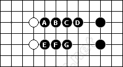

在五子棋的学习中，经常会碰到“腐”这个词，这里，我们来看一下“腐”的含义。
“腐”，是来自日本的一个概念。由于黑棋无法形成长连，则把这个长连骨架称之为“腐”。
比如，六长连的骨架称为“六腐”，如图，这两个骨架结构都属于六腐。
六长连骨架里的四，称之为“腐四”，如图中A、B、C、D这个四；
六长连骨架里的三，称之为“腐三”，如图中的E、F、G这个三。
如此，我们可以明确：
1、“腐”的概念跟长连禁手挂钩；
2、只有黑棋才有长连禁手，所以只有黑棋才有“腐”的形状；
3、白棋没有“腐”的形状。

| (责任编辑：雪飞) |
［ 于 2011-12-18 18:57:00 时花20金币送鲜花一朵］
［ 于 2011-12-18 18:57:03 时花20金币送鲜花一朵］
［ 于 2011-12-18 18:57:04 时花20金币送鲜花一朵］
［ 于 2011-12-18 18:57:05 时花20金币送鲜花一朵］
［ 于 2011-12-18 18:57:07 时花20金币送鲜花一朵］
［ 于 2011-12-18 18:57:10 时花20金币送鲜花一朵］
［ 于 2011-12-18 18:57:11 时花20金币送鲜花一朵］
［ 于 2011-12-18 18:57:12 时花20金币送鲜花一朵］
［ 于 2011-12-18 18:57:13 时花20金币送鲜花一朵］
［ 于 2011-12-18 18:57:15 时花20金币送鲜花一朵］
［ 于 2011-12-18 18:57:34 时花20金币送鲜花一朵］
［ 于 2011-12-18 19:05:24 时奖励此帖[金币加 100 威望加1］
［此帖子已被 冰雪笑醉 在 2011-12-18 19:06:01 编辑过］
［ 炫飞花样 于 2011-12-28 10:38:25 时花20金币送鲜花一朵］
［ 炫飞花样 于 2011-12-28 10:38:29 时花20金币送鲜花一朵］
［ 炫飞花样 于 2011-12-28 10:38:32 时花20金币送鲜花一朵］
［ 炫飞花样 于 2011-12-28 10:38:35 时花20金币送鲜花一朵］
 操作失误
操作失误［ 踵酃 于 2011-12-18 23:37:23 时花50金币砸了你一个臭鸡蛋］
引用：其实我也是今天才知道这个
原文由 聚贤仙百合 发表于 2011-12-18 18:59:59 :
学习啦,头一次听说这个概念.
［ 聚贤仙百合 于 2011-12-18 19:12:34 时花20金币送鲜花一朵］
操作失误 ［ 踵酃 于 2011-12-18 23:37:23 时花50金币砸了你一个臭鸡蛋］
踵酃你闲大了？
VCF